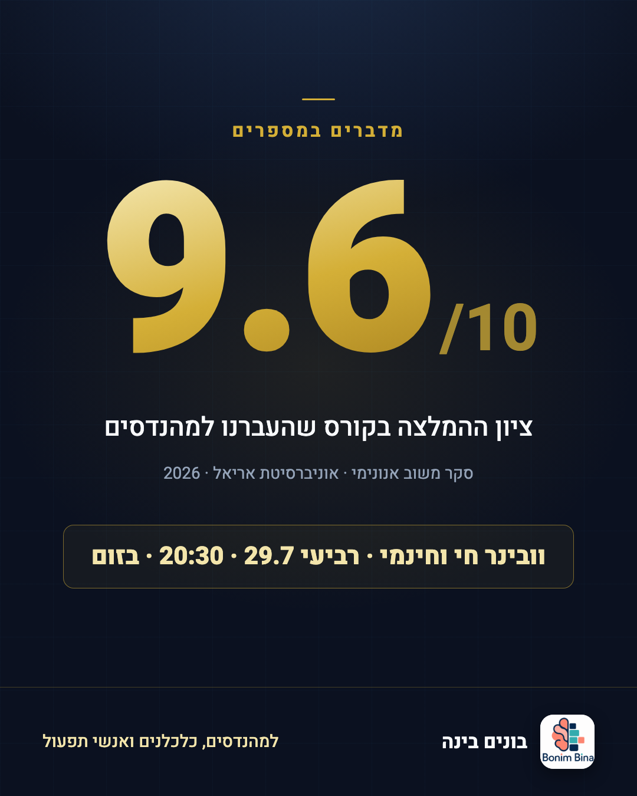
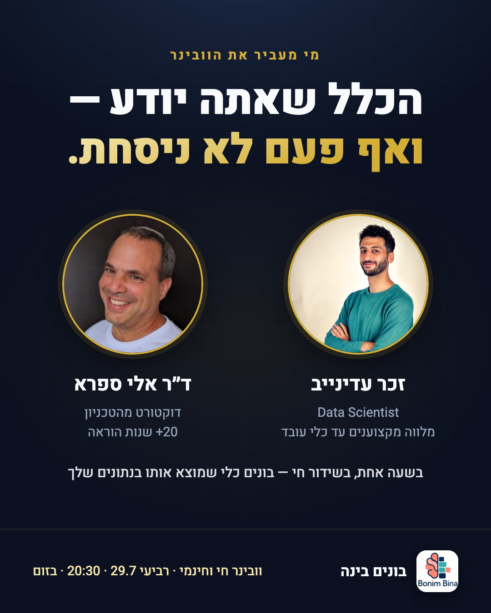

15 גרסאות קופי משלושה כותבי AI בלתי-תלויים → פאנל שופטים → אודיט מול סטנדרט מודעות ממירות (מחקר רשת מקורות 2024-2026) → תיקונים → החבילה הזאת.
ארבעה סוכני מחקר סרקו מקורות ראשוניים: ניסויי AdEspresso בתקציב אמיתי, בנצ'מרקים של WordStream (מעל 1,000 קמפיינים), דאטה של Motion (578 אלף קריאייטיבים), מחקרי Unbounce (57 מיליון המרות) והנחיות מטא הרשמיות. אלה העקרונות שהאודיט נמדד מולם:
מובייל חותך את הטקסט אחרי ~125 תווים. השורה הראשונה חייבת לעבוד לבד: קריאת קהל + הבטחה. רוב הגולשים לא לוחצים "עוד".
Meta Business Help / leadsync.meבטופס Instant (חיכוך אפסי) הקופי הוא מסנן האיכות היחיד — "מהנדסים, כלכלנים" במפורש, לפני הקליק ולא אחריו.
adlibrary.com · thedigitalexchange.coמספר קונקרטי בהוק הוא מנגנון עצירת הגלילה החזק ביותר בסקרי משווקים. 9.6/10 עובד; "קורס מדהים" לא.
databox.comבניסוי AdEspresso עם אותה תמונה ואותו קהל, גרסת הקופי לבדה שינתה את עלות הליד פי 2.4. קופי בינוני-ארוך ניצח את הקצר בלידגן קר.
adespresso.com — $1,000 experimentרמת קריאה של כיתות ה'-ז' המירה 11.1% מול 5.3% לניסוח "מקצועי" — גם אצל מהנדסים. הז'רגון נשאר בוובינר, לא במודעה.
Unbounce — 57M conversionsCTA תואם-פעולה ניצח את "למידע נוסף" ב-50.6% בעלות לליד. ניסוח בעלות ("שריינו לי מקום") מרים קליקים עד 90% מול גוף שני.
AdEspresso CTA test · ContentVerveהבטחת replay במודעה מורידה הגעה חיה. את ההקלטה מזכירים אחרי ההרשמה — במייל האישור, לא בקופי.
Livestorm · Unividפנים אנושיות אמיתיות (לא איור) מושכות את העין בפיד; פורטרט המרצים הוא נכס המרה, לא קישוט. UGC-נטיב מנצח ליטוש: CTR 1.8% מול 1.1%.
lineardesign.com · Reloop/Meta case59% מההרשמות לוובינר נופלות בשבוע האחרון — התאריך והשעה הם הדדליין האמיתי, ומוצגים בכל נכס. בלי "נותרו 3 מקומות" מפוברק.
entrepreneurshq.comמי זה בשביל + מה מקבלים — חייבים להיקרא בשתי שניות של גלילה. הוק-תועלת-הוכחה-CTA, כולם מצביעים על אותה הצעה.
Facebook IQ / profiletreeבלי אינטרו לוגו. 9-15 שניות לפיד קר, כתוביות צרובות (85% צופים בלי סאונד), הצעה עד שנייה 5. הצגת ההצעה מוקדם = CPA נמוך ב-23%.
Motion · 3Play/Facebook IQ400 ₪ לא קונים סיגנל ל-5 מודעות. סט מודעות אחד, 2-3 קריאייטיבים, חוק הריגה כתוב מראש: 2-3x עלות-יעד בלי ליד — כיבוי.
Meta Performance 5 · motionapp.com| Metric | Benchmark | Source |
|---|---|---|
| Cost per free-webinar registration | $1-3 good · $3-10 workable · target <$20 | Major Impact Media · beknownonline |
| Education vertical, leads objective | CTR 1.86% · CVR 10.08% · CPL $28.22 | WordStream 2025, 1,000+ campaigns |
| Facebook CPM, Israel | ~$8-9 median (June dip ~$4.85) | Superads, $3B dataset |
| Instant Form vs landing page | 67% vs 50% completion, same CPL | AdEspresso $2,000 experiment |
| Higher-Intent form type | -20-40% volume, +15-25% lead quality | Meta lead-gen practitioner guide 2026 |
| Video hook rate (3s views / impressions) | <25% kill · 30-40% good · 40%+ elite | Motion Creative Benchmarks 2026 |
| Live show-up rate, webinars | 47.7% avg (Livestorm 2026) | Livestorm Benchmark Report |
| Min. spend per creative for a signal | ~$50-100 engagement · $200-500 conversion | roaspig.com · motionapp.com |
כל מודעה נבדקה מול רובריקה משוקללת (10 קריטריונים) על ידי סוכן אודיט שראה את הקריאייטיב האמיתי. כל החמש עברו עם תיקונים ("pass-with-fixes") — התיקונים יושמו, והגרסאות בעמוד הזה הן אחרי תיקון. שלושה ליקויים חזרו כמעט בכולן: הבטחת הקלטה במודעה (מוריד הגעה חיה), היעדר קריאת קהל בשורה 1, והצעה קטנה מדי על הקריאייטיב.
| Rank | Ad | Audit score (pre-fix) | Verdict | Wave |
|---|---|---|---|---|
| 1 | FINAL-2 — "סוגר את הטאב" | 59 → fixed | Unanimous top-3 of all three copy judges; critical creative-hook mismatch fixed by re-render | Wave 1 |
| 2 | FINAL-3 — "9.6" | 69 → fixed | Highest pre-fix score; proof-led exception, cleanest attribution | Wave 1 |
| 3 | FINAL-1 — "הנתונים ישנים" | 59 → fixed | The validated landing-page hook; creative gained faces + action CTA | Wave 1 |
| 4 | FINAL-4 — "הכלל שלא ניסחת" | 58 → fixed | Distinct respect-angle; wrong course-format headline on creative fixed | Reserve (24-48h swap) |
| 5 | Video — motion static | 67 → fixed | Ken-Burns motion added, replay line removed, audience kicker added | Reels only |


מקבץ תנועה (Ken Burns) על שלושת הכרטיסים המתוקנים, 11 שניות, אילם עם טקסט צרוב. ההוק בפריים הראשון כולל קריאת קהל. משודך לקופי של FINAL-1. בפיד הרגיל הסטטיקים צפויים לנצח (CPA נמוך ב-28% בממוצע לסטטיק בלידגן) — לכן הווידאו רץ ברילס, שם סטטיק 4:5 נחתך ממילא.
| Setting | Value |
|---|---|
| Objective | Leads → Instant Form, Higher Intent type |
| Budget | 400 ILS lifetime · end 29.7 at 20:00 |
| Ad set (one!) | Israel · 28-55 · Hebrew · interests: Civil engineering, Industrial engineering, Project management, AutoCAD, GIS, Surveying, Excel, Economics · Advantage expansion OFF |
| Placements | FB Feed + IG Feed (statics) · Reels (video only) |
| Ads wave 1 | FINAL-2, FINAL-3, FINAL-1 (+video on Reels) |
| Form fields | Name · Email (manual entry!) · "מה התחום המקצועי שלך?" (הנדסה / כלכלה / תפעול / אחר) |
| Form intro card | וובינר חי וחינמי · רביעי 29.7 · 20:30 · בזום — מאקסל מבולגן לכלי עובד, בלי שורת קוד |
| Thank-you screen | "בדקו את המייל" + כפתור הוספה ליומן / קבוצת WhatsApp |
| Auto-enhancements | OFF (RTL casualties) |
| Kill rule | 80-100 ILS spent, zero registrations → pause creative · check at 24h |